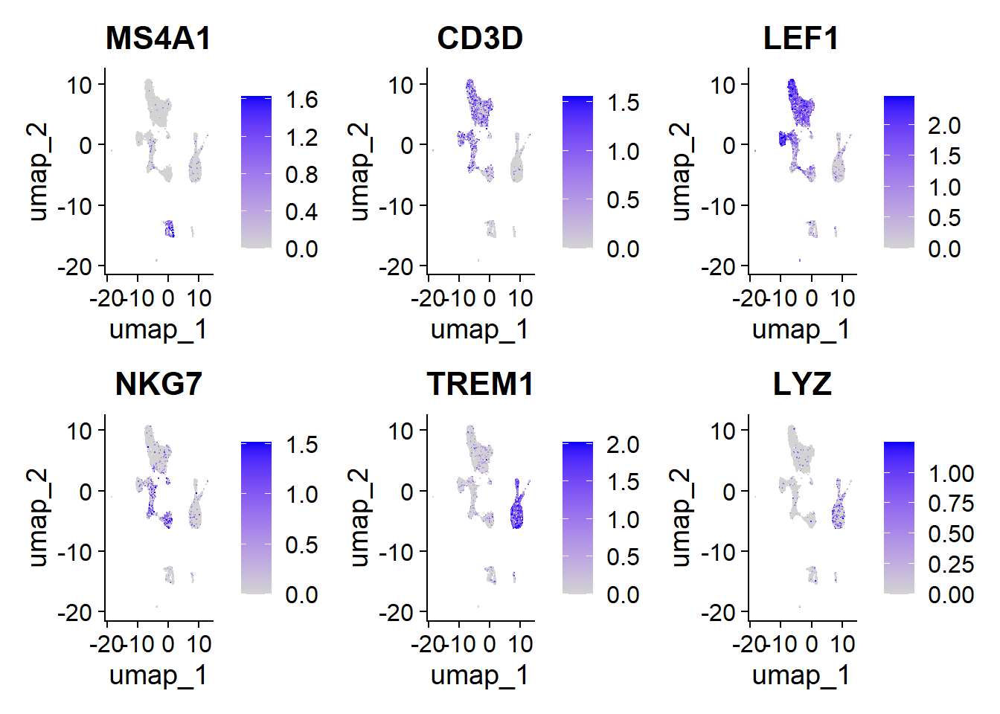
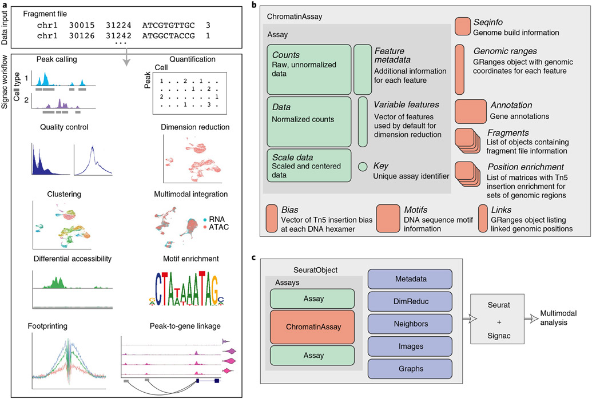
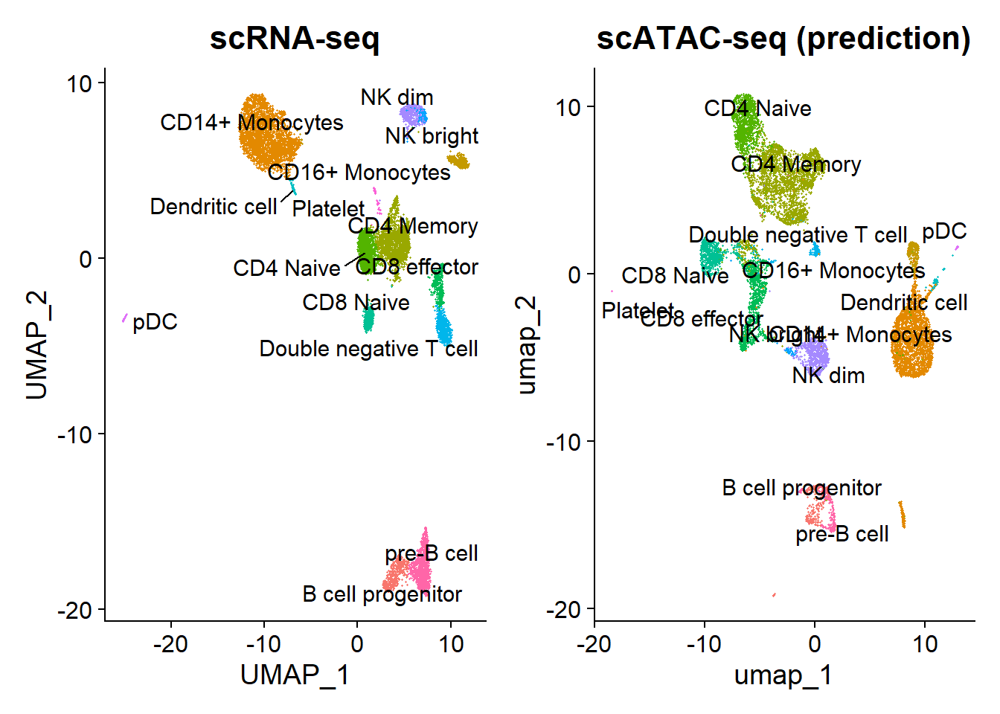
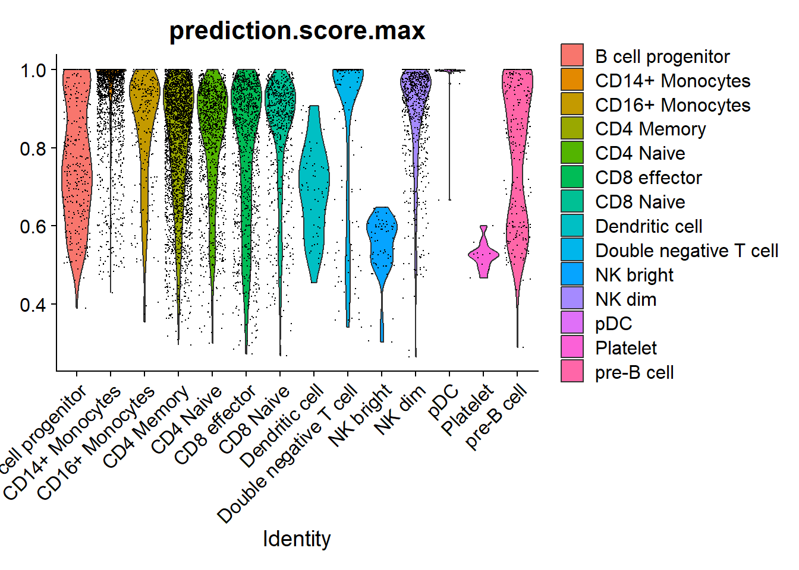
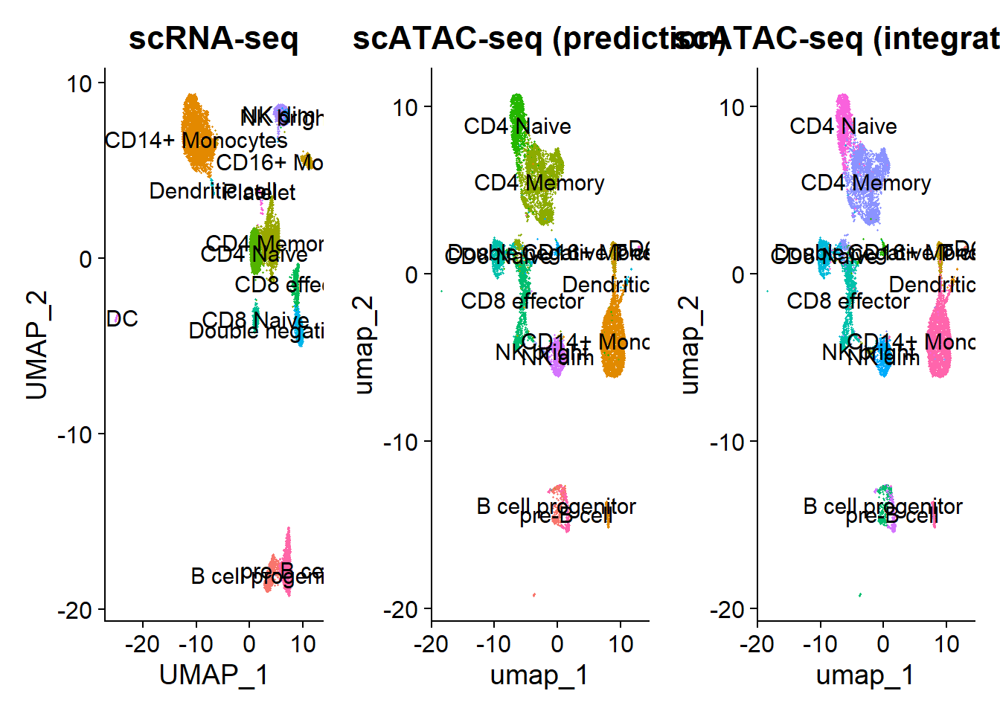
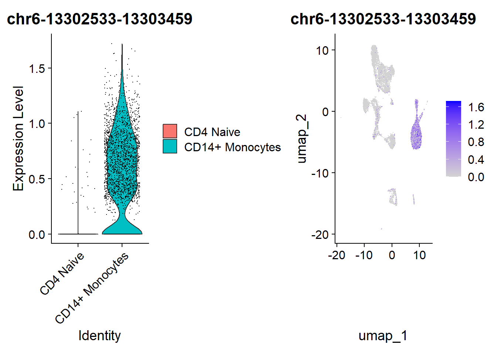
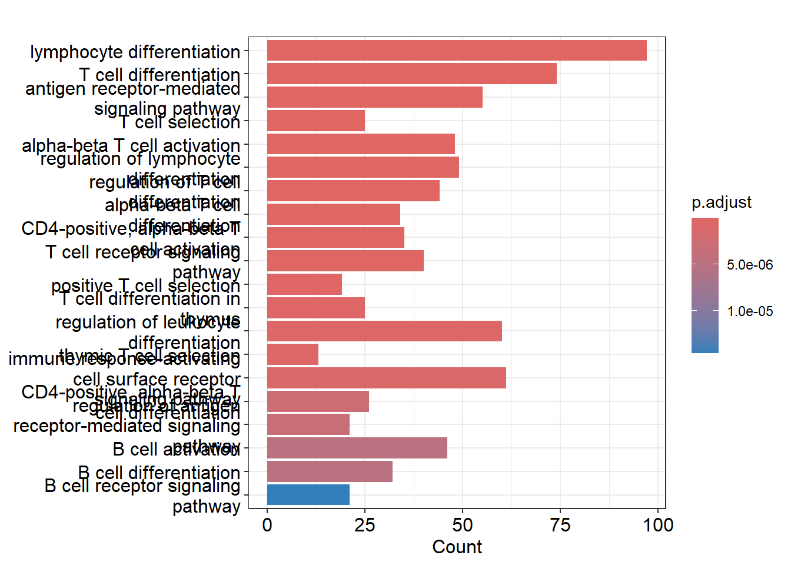
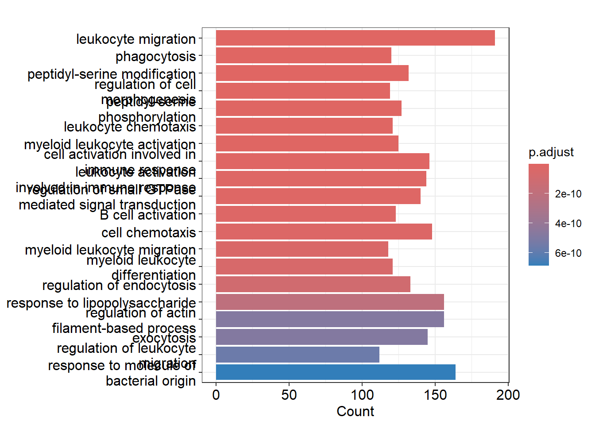

flowchart LR
A{Integrating with scRNA-seq data} --> B(Gene activity matrix approach - \nRNA imputation)
A --> C(Dictionary Learning for cross-modality \nintegration - Bridge integration)
B --> D[Check Biomarkers]
C --> D
4 Practical 14: scATAC-seq Downstream
In this step, we will demonstrate the following:
- Utilizing predicted expression through the gene activity matrix approach.
- Integrating ATAC-seq and RNA-seq data for label transfer using mutual nearest neighbor cell anchors.
- Identifying differentially accessible peaks to assess chromatin accessibility variations across cell types.
- Performing GO enrichment analysis with clusterProfiler to find overrepresented biological processes in gene sets.
- Plotting genomic regions to visualize the distribution and features of specific sequences across the genome.
Downstream workflow
What if we don’t have the RNA information?
The RNA information in the multiome data is great because it is much easier to annotate cell types/states by gene expression. However, what if we have scATAC-seq rather than scMultiome data? In that case is there a way to “predict” the gene expression based on the ATAC fragments? Although not perfect, there is indeed some possible solutions.
4.1 Option A: Gene activity matrix approach / RNA imputation

Gene activity scores capture how much open chromatin there is in the promoter regions of each gene (by default 2000 bp (2 kb) upstream). The assumption here is that open chromatin is a proxy for gene expression. Gene activity scores are represented as a matrix, with one row per gene and one column per cell. This makes the gene activitiy scores directly compatible with single cell RNA-seq data.
Note
Calculating the gene activity scores takes around 10 minutes for 2000 cells and all genes.
We can try to quantify the activity of each gene in the genome by assessing the chromatin accessibility associated with the gene, and create a new gene activity assay derived from the scATAC-seq data. Here we will use a simple approach of summing the fragments intersecting the gene body and promoter region (we also recommend exploring the Cicero tool, which can accomplish a similar goal, and we provide a vignette showing how to run Cicero within a Signac workflow here).
4.1.1 Step 1: Load data
We then count the number of fragments for each cell that map to each of these regions, using the using the FeatureMatrix() function. These steps are automatically performed by the GeneActivity() function:
4.1.2 Step 2: Create a expression matrix
Code
# Load data
load(file = "data/pbmc.RData") # scATAC
start <- Sys.time()
gene.activities <- GeneActivity(pbmc)Extracting gene coordinatesExtracting reads overlapping genomic regionsCode
end <- Sys.time()
end - startTime difference of 13.86905 minsBefore:
Code
pbmc@assays$peaks
ChromatinAssay data with 165376 features for 9649 cells
Variable features: 165376
Genome:
Annotation present: TRUE
Motifs present: FALSE
Fragment files: 1 Add the gene activity matrix to the Seurat object as a new assay and normalize it.
Code
pbmc[['RNA']] <- CreateAssayObject(counts = gene.activities)
# normalization
pbmc <- NormalizeData(
object = pbmc,
assay = 'RNA',
normalization.method = 'LogNormalize',
scale.factor = median(pbmc$nCount_RNA)
)After:
Code
pbmc@assays$peaks
ChromatinAssay data with 165376 features for 9649 cells
Variable features: 165376
Genome:
Annotation present: TRUE
Motifs present: FALSE
Fragment files: 1
$RNA
Assay data with 19607 features for 9649 cells
First 10 features:
PLCXD1, GTPBP6, PPP2R3B, SHOX, CRLF2, CSF2RA, IL3RA, SLC25A6, ASMTL,
P2RY8 4.1.3 Step 3: Check biomarkers
We are now able to visualize the activity of canonical biomarkers to guide our interpretation of scATAC-seq clusters. Although this new putative “scRNA-seq” experiment derived from scATAC-seq will be noisier than a canonical scRNA-seq experiment, it will still be useful. The noise arises from the assumption made when generating the gene activity matrix, which assumes a perfect correlation between promoter/ORF accessibility and gene expression—something that is not always the case.
Code
DefaultAssay(pbmc) <- 'RNA'
FeaturePlot(
object = pbmc,
features = c('MS4A1', 'CD3D', 'LEF1', 'NKG7', 'TREM1', 'LYZ'),
pt.size = 0.1,
max.cutoff = 'q95',
ncol = 3
)
Note
MS4A1 (CD20): Marker for B lymphocytes.
CD3D: Part of the T cell receptor complex, indicating T cell presence.
LEF1: Transcription factor associated with T and B cell differentiation.
NKG7: Expressed in NK cells and T lymphocytes, related to cytotoxicity.
TREM1: Present in monocytes and microglia, associated with the inflammatory response.
LYZ (lysozyme): Expressed in macrophages, involved in defense against bacteria.
These markers indicate the activation and function of various immune cells.
4.2 Signac Workflow

4.3 Label transfer
After calculating the gene activity scores, we can now integrate the ATAC-seq data with the RNA-seq data.
The process begins by identifying anchors, which are pairs of cells—one from ATAC-seq and one from RNA-seq. To achieve this, we project both datasets into a shared space and identify pairs of cells that are mutual nearest neighbors (MNNs), one from each dataset. These pairs are then filtered to retain the most reliable ones, which serve as the anchors.
These anchors allow us to project the ATAC-seq data onto the RNA-seq data, enabling the identification of cell type annotations for nearby cells. In this way, annotations from the RNA-seq data can be transferred to the ATAC-seq data, a method commonly known as label transfer.
4.3.1 Step 4: Integrating with scRNA-seq data (multimodal)
To help interpret the scATAC-seq data, we can classify cells based on an scRNA-seq experiment from the same biological system (human PBMC). We utilize methods for cross-modality integration and label transfer, described here, with a more in-depth tutorial here. We aim to identify shared correlation patterns in the gene activity matrix and scRNA-seq dataset to identify matched biological states across the two modalities. This procedure returns a classification score for each cell for each scRNA-seq-defined cluster label.

Here we load a pre-processed scRNA-seq dataset for human PBMCs, also provided by 10x Genomics. You can download the raw data for this experiment from the 10x website, and view the code used to construct this object on GitHub. Alternatively, you can download the pre-processed Seurat object here.
Code
# Load the pre-processed scRNA-seq data for PBMCs
pbmc_rna <- readRDS("data/pbmc_10k_v3.rds")
pbmc_rna <- UpdateSeuratObject(pbmc_rna)
# free memory
gc() used (Mb) gc trigger (Mb) max used (Mb)
Ncells 12418522 663.3 33923381 1811.8 53005282 2830.8
Vcells 781627810 5963.4 1375216326 10492.1 1363593522 10403.44.3.2 Step 5: Find transfer anchors
Find a set of anchors between a reference and query object. These anchors can later be used to transfer data from the reference to query object using the TransferData object.
Code
transfer.anchors <- FindTransferAnchors(
reference = pbmc_rna, # scRNA
query = pbmc, # scATAC
reduction = 'cca' # Perform dimensional reduction
)Warning in size + sum(size_args, na.rm = FALSE): NAs produced by integer
overflow
Warning in size + sum(size_args, na.rm = FALSE): NAs produced by integer
overflowRunning CCAMerging objectsFinding neighborhoodsFinding anchors Found 19133 anchors
Note
Dimensional reduction to perform when finding anchors. Options are:
pcaproject: Project the PCA from the reference onto the query. We recommend using Principal Component Analysis (PCA) when reference and query datasets are from scRNA-seq, because PCA effectively captures the variance in gene expression data.lsiproject: Project the LSI from the reference onto the query. We recommend using LSI when reference and query datasets are from scATAC-seq. This requires that LSI has been computed for the reference dataset, and the same features (eg, peaks or genome bins) are present in both the reference and query. SeeRunTFIDFandRunSVD.rpca: Project the PCA from the reference onto the query, and the PCA from the query onto the reference (reciprocal PCA projection). This bidirectional approach allows for a more comprehensive alignment of the datasets, potentially enhancing the identification of shared features.cca: Canonical Correlation Analysis (CCA) is used to find linear relationships between the reference and query datasets. By identifying the canonical components that maximize the correlation between the two datasets, CCA helps in aligning them based on shared information.
4.3.3 Step 7: Annotate scATAC-seq cells via label transfer
After identifying anchors, we can transfer annotations from the scRNA-seq dataset into the scATAC-seq cells. The annotations are stored in the seurat_annotations field, and are provided as input to the refdata parameter. The output will contain a matrix with predictions and confidence scores for each ATAC-seq cell.
Code
predicted.labels <- TransferData(
anchorset = transfer.anchors,
refdata = pbmc_rna$celltype,
weight.reduction = pbmc[['lsi']], # reduction of the original `seurat` object's dim
dims = 2:30
)Finding integration vectorsFinding integration vector weightsPredicting cell labelsCode
pbmc <- AddMetaData(object = pbmc, metadata = predicted.labels)
gc()# free memory used (Mb) gc trigger (Mb) max used (Mb)
Ncells 12479518 666.5 33923381 1811.8 53005282 2830.8
Vcells 784162891 5982.7 1375216326 10492.1 1372394404 10470.6Check plot
Code
plot1 <- DimPlot(
object = pbmc_rna,
group.by = 'celltype',
label = TRUE,
repel = TRUE) + NoLegend() + ggtitle('scRNA-seq')
plot2 <- DimPlot(
object = pbmc,
group.by = 'predicted.id',
label = TRUE,
repel = TRUE) + NoLegend() + ggtitle('scATAC-seq (prediction)')
plot1 | plot2 
4.3.4 Step 8: Remove platelets
The scRNA-based classifications match the UMAP visualization from the scATAC-seq data. However, a small group of cells is unexpectedly predicted to be platelets, which lack nuclei and shouldn’t be detected by scATAC-seq. These cells might actually be megakaryocytes, platelet precursors usually found in the bone marrow but rarely in peripheral blood. Given the extreme rarity of megakaryocytes in normal bone marrow (<0.1%), this seems unlikely.
Code
VlnPlot(pbmc, 'prediction.score.max', group.by = 'predicted.id')
Plotting the prediction score for the cells assigned to each label reveals that the “platelet” cells received relatively low scores (< 0.8), indicating a low confidence in the assigned cell identity. In most cases, the next most likely cell identity predicted for these cells was “CD4 naive”.
Code
# Identify the metadata columns that start with "prediction.score."
metadata_attributes <- colnames(pbmc[[]])
prediction_score_attributes <- grep("^prediction.score.", metadata_attributes, value = TRUE)
prediction_score_attributes <- setdiff(prediction_score_attributes, "prediction.score.max")
# Extract the prediction score attributes for these cells
predicted_platelets <- which(pbmc$predicted.id == "Platelet")
platelet_scores <- pbmc[[]][predicted_platelets, prediction_score_attributes]
# Order the columns by their average values in descending order
ordered_columns <- names(sort(colMeans(platelet_scores, na.rm = TRUE), decreasing = TRUE))
ordered_platelet_scores_df <- platelet_scores[, ordered_columns]
head(ordered_platelet_scores_df)[3] prediction.score.CD4.Memory
ACAAAGAAGACACGGT-1 0.025746481
CACTAAGGTAATGTAG-1 0.008556831
CTCAACCAGCGAGCTA-1 0.024011379
GAATCTGCATAGTCCA-1 0.016515476
GCTTAAGCAAAGGTCG-1 0.020222801
GTCACCTGTCAGGCTC-1 0.025835081As there are only a very small number of cells classified as “platelets” (< 20), it is difficult to figure out their precise cellular identity. Larger datasets would be required to confidently identify specific peaks for this population of cells, and further analysis performed to correctly annotate them. For downstream analysis we will thus remove the extremely rare cell states that were predicted, retaining only cell annotations with >20 cells total.
Code
predicted_id_counts <- table(pbmc$predicted.id)
# Identify the predicted.id values that have more than 20 cells
major_predicted_ids <- names(predicted_id_counts[predicted_id_counts > 20])
pbmc <- pbmc[, pbmc$predicted.id %in% major_predicted_ids]For downstream analyses, we can simply reassign the identities of each cell from their UMAP cluster index to the per-cell predicted labels. It is also possible to consider merging the cluster indexes and predicted labels.
Code
# change cell identities to the per-cell predicted labels
Idents(pbmc) <- pbmc$predicted.id4.3.5 Step 9: Rename labels
Replace each cluster label with its most likely predicted label
Code
for(i in levels(pbmc)) {
cells_to_reid <- WhichCells(pbmc, idents = i)
newid <- names(which.max(table(pbmc$predicted.id[cells_to_reid])))
Idents(pbmc, cells = cells_to_reid) <- newid
}4.3.6 Step 10: Compare the results
Code
# scRNA-seq
plot1 <- DimPlot(pbmc_rna, group.by = "celltype", label = TRUE) + NoLegend() + ggtitle("scRNA-seq")
# Gene matrix
plot2 <- DimPlot(pbmc, group.by = "predicted.id", label = TRUE) + NoLegend() + ggtitle("scATAC-seq (prediction)")
# Integration
plot3 <- DimPlot(pbmc, label = T, group.by = "ident") + NoLegend() + ggtitle("scATAC-seq (integration)")
plot1 + plot2 + plot3
used (Mb) gc trigger (Mb) max used (Mb)
Ncells 12536033 669.5 33923381 1811.8 53005282 2830.8
Vcells 910228372 6944.5 1656854019 12640.8 1425576862 10876.34.4 Find differentially accessible peaks between cell types
In transcriptomic studies, we analyze differentially transcribed genes, so it is logical to study in ATAC-seq the genomic regions that are differentially accessible to the Tn5 transposase. To investigate differential chromatin accessibility, logistic regressions are used, as recommended by Ntranos et al. 2018, and the total number of reads is included as a latent variable to mitigate the negative impact on results when dealing with libraries/samples with different sequencing depths.
A simple approach is to perform a Wilcoxon rank sum test, and the presto package has implemented an extremely fast Wilcoxon test that can be run on a Seurat object.
Code
if (!requireNamespace("remotes", quietly = TRUE))
install.packages('remotes')
remotes::install_github('immunogenomics/presto')For sparse data like scATAC-seq, it is necessary to adjust the min.pct parameter of the FindMarkers() function to lower values, as the default value (0.1) is designed for scRNA-seq data. Here we will focus on comparing Naive CD4 cells and CD14 monocytes, but any groups of cells can be compared using these methods. We can also visualize these marker peaks on a violin plot, feature plot, dot plot, heat map, or any visualization tool in Seurat.
Code
library(presto)
# change back to working with peaks instead of gene activities
DefaultAssay(pbmc) <- 'peaks'
# wilcox is the default option for test.use
da_peaks <- FindMarkers(
object = pbmc,
ident.1 = "CD4 Naive",
ident.2 = "CD14+ Monocytes",
test.use = 'wilcox',
min.pct = 0.1
)
head(da_peaks) p_val avg_log2FC pct.1 pct.2 p_val_adj
chr6-13302533-13303459 0 -5.308082 0.025 0.771 0
chr19-54207815-54208728 0 -4.370882 0.050 0.794 0
chr17-78198651-78199583 0 -5.653591 0.023 0.760 0
chr12-119988511-119989430 0 4.163235 0.782 0.090 0
chr7-142808530-142809435 0 3.665895 0.759 0.088 0
chr17-82126458-82127377 0 5.017039 0.699 0.042 0Code
# save
save(da_peaks, file = "data/da_peaks.RData")We visualize the results of the differential accessibility test using a violin plot and over the UMAP projection.
Code
plot1 <- VlnPlot(
object = pbmc,
features = rownames(da_peaks)[1],
pt.size = 0.1,
idents = c("CD4 Naive","CD14+ Monocytes")
)
plot2 <- FeaturePlot(
object = pbmc,
features = rownames(da_peaks)[1],
pt.size = 0.1
)
plot1 | plot2
Peak coordinates can be difficult to interpret alone. We can find the closest gene to each of these peaks using the ClosestFeature() function.
Code
open_cd4naive <- rownames(da_peaks[da_peaks$avg_log2FC > 3, ])
open_cd14mono <- rownames(da_peaks[da_peaks$avg_log2FC < -3, ])
closest_genes_cd4naive <- ClosestFeature(pbmc, regions = open_cd4naive)
closest_genes_cd14mono <- ClosestFeature(pbmc, regions = open_cd14mono)
# results
head(closest_genes_cd4naive) tx_id gene_name gene_id gene_biotype
ENSE00002206071 ENST00000397558 BICDL1 ENSG00000135127 protein_coding
ENST00000632998 ENST00000632998 PRSS2 ENSG00000275896 protein_coding
ENST00000583593 ENST00000583593 CCDC57 ENSG00000176155 protein_coding
ENST00000393054 ENST00000393054 ATP6V0A4 ENSG00000105929 protein_coding
ENST00000545320 ENST00000545320 CD6 ENSG00000013725 protein_coding
ENST00000509332 ENST00000509332 RP11-18H21.1 ENSG00000245954 lincRNA
type closest_region query_region
ENSE00002206071 exon chr12-119989869-119990297 chr12-119988511-119989430
ENST00000632998 utr chr7-142774509-142774564 chr7-142808530-142809435
ENST00000583593 gap chr17-82108955-82127691 chr17-82126458-82127377
ENST00000393054 cds chr7-138752625-138752837 chr7-138752283-138753197
ENST00000545320 gap chr11-60971915-60987907 chr11-60985909-60986801
ENST00000509332 gap chr4-152100818-152101483 chr4-152100248-152101142
distance
ENSE00002206071 438
ENST00000632998 33965
ENST00000583593 0
ENST00000393054 0
ENST00000545320 0
ENST00000509332 0Code
head(closest_genes_cd14mono) tx_id gene_name gene_id gene_biotype
ENST00000606214 ENST00000606214 TBC1D7 ENSG00000145979 protein_coding
ENST00000448962 ENST00000448962 RPS9 ENSG00000170889 protein_coding
ENST00000592988 ENST00000592988 AFMID ENSG00000183077 protein_coding
ENSE00001638912 ENST00000455005 RP5-1120P11.3 ENSG00000231881 lincRNA
ENST00000635379 ENST00000635379 LINC01588 ENSG00000214900 lincRNA
ENSE00001389095 ENST00000340607 PTGES ENSG00000148344 protein_coding
type closest_region query_region distance
ENST00000606214 gap chr6-13267836-13305061 chr6-13302533-13303459 0
ENST00000448962 gap chr19-54201610-54231740 chr19-54207815-54208728 0
ENST00000592988 gap chr17-78191061-78202498 chr17-78198651-78199583 0
ENSE00001638912 exon chr6-44073913-44074798 chr6-44058439-44059230 14682
ENST00000635379 gap chr14-50039258-50039391 chr14-50038381-50039286 0
ENSE00001389095 exon chr9-129752887-129753047 chr9-129776928-129777838 238804.5 GO enrichment analysis with clusterProfiler
We could follow up with this result by doing gene ontology enrichment analysis on the gene sets returned by ClosestFeature(),and there are many R packages that can do this (see theGOstats or clusterProfiler packages for example).
Code
library(clusterProfiler)
library(org.Hs.eg.db)
library(enrichplot)Code
cd4naive_ego <- enrichGO(gene = closest_genes_cd4naive$gene_id, # like DEG
keyType = "ENSEMBL",
OrgDb = org.Hs.eg.db, # organism
ont = "BP", # Biological process
pAdjustMethod = "BH", # Benjamini-Hochberg (BH)
pvalueCutoff = 0.05,
qvalueCutoff = 0.05,
readable = TRUE) # Convert the gene identifiers (ENSEMBL) to readable gene names.
barplot(cd4naive_ego,showCategory = 20)
Code
cd14mono_ego <- enrichGO(gene = closest_genes_cd14mono$gene_id,
keyType = "ENSEMBL",
OrgDb = org.Hs.eg.db,
ont = "BP",
pAdjustMethod = "BH",
pvalueCutoff = 0.05,
qvalueCutoff = 0.05,
readable = TRUE)
barplot(cd14mono_ego,showCategory = 20)
4.6 Plotting genomic regions
We can visualize the frequency of Tn5 integration across genomic regions for cells grouped by cluster, cell type, or any other metadata stored in the object using the CoveragePlot() function. These plots represent pseudo-bulk accessibility tracks, where the signal from all cells within a group is averaged to display DNA accessibility in a specific region. (Credit to Andrew Hill for the inspiration behind this function, as highlighted in his excellent blog post.) In addition to accessibility tracks, we can include other key information such as gene annotations, peak coordinates, and genomic links (if available in the object). For further details, refer to the visualization vignette.
For plotting purposes, it’s nice to have related cell types grouped together. We can automatically sort the plotting order according to similarities across the annotated cell types by running the SortIdents() function:
Code
pbmc <- SortIdents(pbmc)Creating pseudobulk profiles for 13 variables across 165376 featuresComputing euclidean distance between pseudobulk profilesClustering distance matrixWe can then visualize the DA peaks open in CD4 naive cells and CD14 monocytes, near some key marker genes for these cell types, CD4 and LYZ respectively. Here we’ll highlight the DA peaks regions in grey.
Code
# find DA peaks overlapping gene of interest
regions_highlight <- subsetByOverlaps(StringToGRanges(open_cd4naive), LookupGeneCoords(pbmc, "CD4"))
CoveragePlot(
object = pbmc,
region = "CD4",
region.highlight = regions_highlight,
extend.upstream = 1000,
extend.downstream = 1000
)Warning: Removed 22 rows containing missing values or values outside the scale range
(`geom_segment()`).Warning: Removed 3 rows containing missing values or values outside the scale range
(`geom_segment()`).Warning: Removed 1 row containing missing values or values outside the scale range
(`geom_segment()`).
5 Calling peaks
You can call peaks on a single-cell ATAC-seq dataset using MACS2. To use this functionality in Signac, make sure MACS2 is installed—either through pip or conda, or by building it from source.
For example, with scATAC-seq data from human PBMCs (as shown in our tutorial or from Signac vignette), you can load the necessary packages and a pre-computed Seurat object. See the vignette for the code used to generate this object and links to the raw data.

Code
sessionInfo()R version 4.4.1 (2024-06-14 ucrt)
Platform: x86_64-w64-mingw32/x64
Running under: Windows 11 x64 (build 22631)
Matrix products: default
locale:
[1] LC_COLLATE=English_United States.utf8
[2] LC_CTYPE=English_United States.utf8
[3] LC_MONETARY=English_United States.utf8
[4] LC_NUMERIC=C
[5] LC_TIME=English_United States.utf8
time zone: America/Mexico_City
tzcode source: internal
attached base packages:
[1] stats4 stats graphics grDevices utils datasets methods
[8] base
other attached packages:
[1] enrichplot_1.24.4 org.Hs.eg.db_3.19.1
[3] clusterProfiler_4.12.6 presto_1.0.0
[5] data.table_1.16.0 Rcpp_1.0.13
[7] future_1.34.0 EnsDb.Hsapiens.v86_2.99.0
[9] ensembldb_2.28.1 AnnotationFilter_1.28.0
[11] GenomicFeatures_1.56.0 AnnotationDbi_1.66.0
[13] Biobase_2.64.0 patchwork_1.2.0
[15] ggplot2_3.5.1 GenomicRanges_1.56.1
[17] GenomeInfoDb_1.40.1 IRanges_2.38.1
[19] S4Vectors_0.42.1 BiocGenerics_0.50.0
[21] Seurat_5.1.0 SeuratObject_5.0.2
[23] sp_2.1-4 Signac_1.14.0
loaded via a namespace (and not attached):
[1] fs_1.6.4 ProtGenerics_1.36.0
[3] matrixStats_1.4.0 spatstat.sparse_3.1-0
[5] bitops_1.0-8 httr_1.4.7
[7] RColorBrewer_1.1-3 tools_4.4.1
[9] sctransform_0.4.1 utf8_1.2.4
[11] R6_2.5.1 lazyeval_0.2.2
[13] uwot_0.2.2 withr_3.0.1
[15] gridExtra_2.3 progressr_0.14.0
[17] cli_3.6.2 spatstat.explore_3.3-2
[19] fastDummies_1.7.4 scatterpie_0.2.4
[21] labeling_0.4.3 spatstat.data_3.1-2
[23] ggridges_0.5.6 pbapply_1.7-2
[25] Rsamtools_2.20.0 yulab.utils_0.1.7
[27] gson_0.1.0 DOSE_3.30.5
[29] R.utils_2.12.3 parallelly_1.38.0
[31] limma_3.60.6 rstudioapi_0.16.0
[33] RSQLite_2.3.7 gridGraphics_0.5-1
[35] generics_0.1.3 BiocIO_1.14.0
[37] ica_1.0-3 spatstat.random_3.3-1
[39] dplyr_1.1.4 GO.db_3.19.1
[41] Matrix_1.7-0 ggbeeswarm_0.7.2
[43] fansi_1.0.6 abind_1.4-8
[45] R.methodsS3_1.8.2 lifecycle_1.0.4
[47] yaml_2.3.10 SummarizedExperiment_1.34.0
[49] qvalue_2.36.0 SparseArray_1.4.8
[51] Rtsne_0.17 grid_4.4.1
[53] blob_1.2.4 promises_1.3.0
[55] crayon_1.5.3 miniUI_0.1.1.1
[57] lattice_0.22-6 cowplot_1.1.3
[59] KEGGREST_1.44.1 pillar_1.9.0
[61] knitr_1.48 fgsea_1.30.0
[63] rjson_0.2.22 future.apply_1.11.2
[65] codetools_0.2-20 fastmatch_1.1-4
[67] leiden_0.4.3.1 glue_1.7.0
[69] ggfun_0.1.6 spatstat.univar_3.0-1
[71] treeio_1.28.0 vctrs_0.6.5
[73] png_0.1-8 spam_2.10-0
[75] gtable_0.3.5 cachem_1.1.0
[77] xfun_0.45 S4Arrays_1.4.1
[79] mime_0.12 tidygraph_1.3.1
[81] survival_3.6-4 RcppRoll_0.3.1
[83] statmod_1.5.0 fitdistrplus_1.2-1
[85] ROCR_1.0-11 nlme_3.1-164
[87] ggtree_3.12.0 bit64_4.0.5
[89] RcppAnnoy_0.0.22 irlba_2.3.5.1
[91] vipor_0.4.7 KernSmooth_2.23-24
[93] colorspace_2.1-1 DBI_1.2.3
[95] ggrastr_1.0.2 tidyselect_1.2.1
[97] bit_4.0.5 compiler_4.4.1
[99] curl_5.2.2 httr2_1.0.5
[101] DelayedArray_0.30.1 plotly_4.10.4
[103] shadowtext_0.1.4 rtracklayer_1.64.0
[105] scales_1.3.0 lmtest_0.9-40
[107] rappdirs_0.3.3 stringr_1.5.1
[109] digest_0.6.36 goftest_1.2-3
[111] spatstat.utils_3.1-0 rmarkdown_2.28
[113] XVector_0.44.0 htmltools_0.5.8.1
[115] pkgconfig_2.0.3 MatrixGenerics_1.16.0
[117] fastmap_1.2.0 rlang_1.1.3
[119] htmlwidgets_1.6.4 UCSC.utils_1.0.0
[121] shiny_1.9.1 farver_2.1.2
[123] zoo_1.8-12 jsonlite_1.8.8
[125] BiocParallel_1.38.0 GOSemSim_2.30.2
[127] R.oo_1.26.0 RCurl_1.98-1.16
[129] magrittr_2.0.3 ggplotify_0.1.2
[131] GenomeInfoDbData_1.2.12 dotCall64_1.1-1
[133] munsell_0.5.1 ape_5.8
[135] viridis_0.6.5 reticulate_1.39.0
[137] stringi_1.8.4 ggraph_2.2.1
[139] zlibbioc_1.50.0 MASS_7.3-60.2
[141] plyr_1.8.9 parallel_4.4.1
[143] listenv_0.9.1 ggrepel_0.9.5
[145] deldir_2.0-4 Biostrings_2.72.1
[147] graphlayouts_1.2.0 splines_4.4.1
[149] tensor_1.5 igraph_2.0.3
[151] spatstat.geom_3.3-2 RcppHNSW_0.6.0
[153] reshape2_1.4.4 XML_3.99-0.17
[155] evaluate_1.0.0 tweenr_2.0.3
[157] httpuv_1.6.15 RANN_2.6.2
[159] tidyr_1.3.1 purrr_1.0.2
[161] polyclip_1.10-7 scattermore_1.2
[163] ggforce_0.4.2 xtable_1.8-4
[165] restfulr_0.0.15 tidytree_0.4.6
[167] RSpectra_0.16-2 later_1.3.2
[169] viridisLite_0.4.2 tibble_3.2.1
[171] aplot_0.2.3 memoise_2.0.1
[173] beeswarm_0.4.0 GenomicAlignments_1.40.0
[175] cluster_2.1.6 globals_0.16.3 5.1 References
- Stuart, et al. 2019. Comprehensive Integration of Single-Cell Data. Cell.
- Single-cell ATAC sequencing
- Heumos, et al . 2023. Best practices for single-cell analysis across modalities. Nature reviews genetics.
- Signac tutorial - Create a gene activity matrix
- Signac tutorial - scATAC-seq data integration
- Signac tutorial - Integrating scRNA-seq and scATAC-seq data
- Signac tutorial - Calling peaks
- Análisis de datos scATAC-seq en Signac: cerebro murino